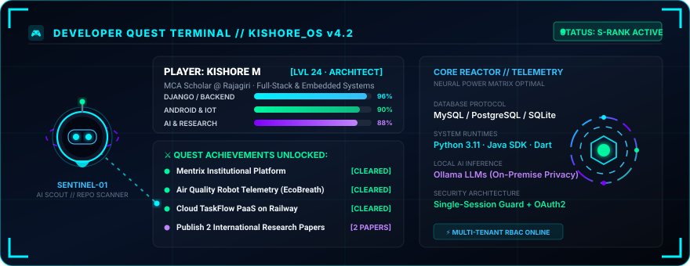
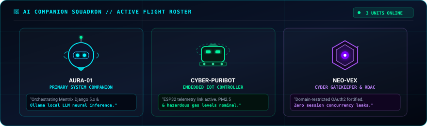
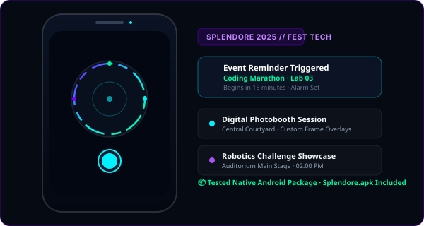
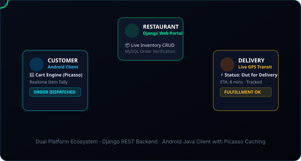
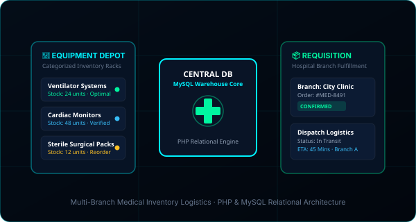

Kishore M Next-Gen AI Developer Universe
Software Developer & MCA Candidate at Rajagiri College of Social Sciences. Architecting enterprise Django ecosystems, native Android systems, IoT robotics telemetry, and privacy-first local AI intelligence.
Interactive AI Control Center
Real-time developer diagnostics, verified system parameters, and subsystem statuses.
SYSTEM STATUS
ONLINEPRIMARY RUNTIMES
ACTIVEPROJECT DATABASE
8 VERIFIEDCyber Quest: The Architect's Trial
Take control of AURA-01. Collect verified tech modules, dodge legacy security bugs, and unlock Kishore's Master Architect dossier.

AI Bot Dialogue Terminal
Transmit real-time telemetry queries to Kishore's 3 specialized digital companion bots.

[AURA-01 ONLINE] Welcome, visitor. I monitor Kishore M's full-stack Django architecture and local AI implementations. Select an inquiry below:
The Skills Universe
Verified technology constellations derived from source repositories and academic curriculum.
Programming Languages
Core Computational RuntimesWeb & Backend Engineering
Production Web SystemsMobile & IoT Telemetry
Hardware-Software BridgesDatabases & AI Tooling
Data & Edge IntelligenceMentrix — Institutional Mentoring Ecosystem
Officially deployed on the college server under the institutional domain. Engineered with Django and MySQL to govern multi-stakeholder mentoring workflows, single-session concurrency, and on-premise local AI telemetry.
🎓 Multi-Tenant Role Matrix
Discrete portals for Students (session requests, progression logs), Faculty (slot scheduling, mentoring notes), HODs (department-wide audit reporting), and Super Administrators with instant role-switching.
🔐 Defense-in-Depth Security
Domain-restricted Google OAuth2 login exclusivity, custom single-session invalidation middleware, zero-cache headers for academic confidentiality, and OTP password recovery pipelines.
🧠 On-Premise Local AI (Ollama)
Integrated local LLM pipeline to analyze mentoring session notes and surface actionable student sentiment trends without exposing confidential academic records to commercial third-party cloud APIs.
📄 ReportLab PDF Compilation
End-to-end automated compilation engine converting mentoring meeting logs and semester guidance evaluations into official, downloadable institutional PDF transcripts.
Immersive Project Showcase
Original visual architectures and source-derived implementation breakdowns across all 8 projects.

Splendore 2025 — Festive Camera & Reminder
Native Android mobile application engineered for the Splendore 2025 festival. Features dynamic event timeline notifications and an interactive photo-booth module capturing high-resolution photos through custom circular festive frames.

IoT Air Quality Detection & Robotic Platform
Embedded systems project combining real-time environmental monitoring with robotic mobility. Environmental sensors connected to an ESP32 microcontroller stream PM2.5/gas readings to a native Android remote control interface (EcoBreath / PuriBot).

Online Food & Grocery Delivery Ecosystem
Dual-platform e-commerce application developed as a degree project. Features customer, restaurant, and delivery partner dashboards with location-based restaurant search, live delivery tracking, Picasso image caching, and a MySQL relational catalog.

Medical Equipment Warehouse Logistics
Database-backed inventory and dispatch tracking system designed for medical equipment depots. Facilitates multi-branch inventory tracking, hospital requisition approvals, stock level threshold monitoring, and confirmed order dispatches.
TaskFlow Task Hub
Task management platform with priority matrices, asynchronous AJAX status toggles without reloads, overdue deadlines, and Railway cloud PaaS setup.
Repository →Dignito Fest Management
Cross-platform mobile application built with Flutter to coordinate event schedules, participant registration, and coordinator announcements.
Repository →GPT Helper App & Package
Lightweight Python library and Flask chat interface supporting concurrent chat threads, persistent sidebar history, and keyboard shortcuts.
Repository →Developer Activity Matrix
Real public development activity and commit telemetry synchronized directly across GitHub repositories.

Education & Research Publications
Formal computer applications education and peer-reviewed international conference presentations.
🎓 Academic Milestones
Master of Computer Applications (MCA)
Rajagiri College of Social Sciences (RCSS) (Autonomous), Kalamassery
Specializing in advanced software engineering, cloud systems, distributed databases, and artificial intelligence.
Bachelor of Computer Applications (BCA)
De Paul Institute of Science and Technology, Angamaly
Graduated with distinction: CGPA 8.78. Developed core competencies in C++, Java, Python, and relational database systems.
🔬 International Research & Publications
“Revolutionizing Healthcare: The Integration of Robotics in Medicine”
Presented review paper at DeNovo23, an International Conference at DePaul Institute of Science and Technology, Angamaly.
“Examining the Impact of Artificial Intelligence on Personalized Healthcare (From Predictive Diagnostics to Customized Treatment Plans)”
Presented and Published at the International AI & ML Conference hosted by the Department of Computer Science, Bharata Mata College, Thrikkakara.
Initiate Collaboration
Open to software engineering roles, full-stack platform architecture, Android mobile systems, and IoT telemetry projects.